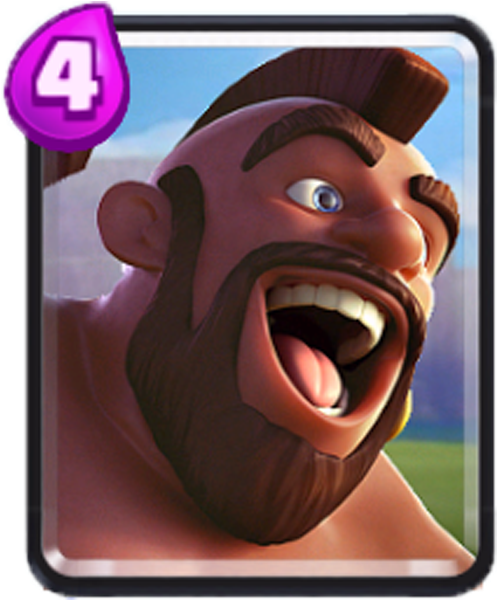
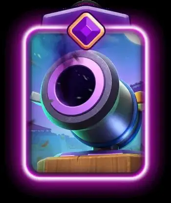

Seznam 8 karet
Balíček se skládá z přesně vyvážených karet pro útok i defenzívu:

Hog Rider
Hlavní útočná karta (Win Condition). Cílí pouze na budovy.

Cannon
Levná obranná budova za 3 elixíry proti pozemním jednotkám.
Musketeer
Hlavní vzdušná i pozemní obrana s dlouhým dostřelem.
Další karty v balíčku
- Ice Golem (2 Elixíry): Slouží jako štít (tanking) a k odákání jednotek.
- Skeletons (1 Elixír): Karta na rychlé protáčení a zpomalení soupeřových jednotek.
- Ice Spirit (1 Elixír): Zmrazí nepřátele na krátkou dobu a protáčí balíček.
- Fireball (4 Elixíry): Silné kouzlo na ničení skupin jednotek a dodělávání věží.
- The Log (2 Elixíry): Kouzlo k čistění pozemních jednotek a odstranění resetů.